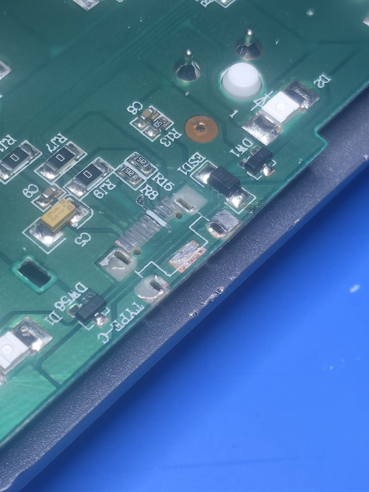

USB-C port and pad repair
The charge port was replaced and the damaged pads underneath rebuilt first, so the new port had something solid to sit on. The same method applies to laptop USB-C ports.
No power, no boot, charging faults and liquid damage, repaired at motherboard level. Plenty of laptops written off as needing a new board can be fixed by replacing the failed part. Drop off by appointment in Watford, or post it from anywhere in the UK.
Book a repairBoard-level faults, where a whole new motherboard is usually the quote.
Nothing at all when you press the button. We trace the fault on the board, then quote a fixed price before any repair work.
Powers on but won't start, or shuts off. Diagnosed at board level rather than guessed at.
Won't charge, or only runs on the charger. Charge ports and the charging circuit on the board.
Spills cause corrosion and short circuits on the board. Damaged components are found and replaced.
USB-C, charge and other ports replaced, with damaged pads rebuilt first so the new port holds.
A motherboard repair usually leaves the storage untouched. We can't guarantee data survives, so back up first if you can.
We repair all makes and models. These are the ones we see most.
MacBook, Dell, HP, Lenovo, Asus, Acer, MSI, Microsoft Surface and more.
Including high-power gaming laptops from Asus ROG, MSI, Razer and Alienware.
Desktop computers and motherboards, including custom-built PCs.
Every repair is photographed at each stage, and you get the pictures.

The charge port was replaced and the damaged pads underneath rebuilt first, so the new port had something solid to sit on. The same method applies to laptop USB-C ports.
More examples on our work page.
No repair work starts until you've approved the price.
| Service | Price |
|---|---|
| Simple repair (ports, connectors) | £50–£70 |
| Laptop board repair | £80–£130 |
| BGA / advanced repair | from £120 |
| Diagnostic, where we have to find the fault (deducted if you go ahead) | £30 |
If the fault is obvious, like a broken charge port, there's no diagnostic fee. Parts are charged separately where needed. If we post it back, return postage is added at cost. If we can't repair it, there's no charge for our time. Full details in our terms.
By appointment. Collect it in person and there's no postage to pay.
From anywhere in the UK. Return postage is charged at exactly what Royal Mail charges us.
Our workmanship is guaranteed for as long as you own the device. Replacement parts carry a 6-month warranty. Your statutory rights are not affected.
A board-level repair can often keep the data, but we can't guarantee it, and some repairs carry a risk to stored data. Back up first if you can.
Yes, but a parcel with a battery fitted must be handed in at a Post Office counter, not put in a postbox. Don't send a swollen, leaking or damaged battery — remove it, keep it, and tell us on your booking form.
Only if we have to find the fault for you. It's £30, and it comes off the repair price if you go ahead. If the fault is obvious, like a broken port, there's no diagnostic fee and we just price the repair.
There's no charge for our time. If we post it back, you pay the return postage at cost. You get it back with a written account of what we tested.
We quote before any repair work, and nothing chargeable starts until you approve the price. If we find it will cost more than you approved, we contact you before carrying on.
Book online and we'll email you a short booking form. Then either post it to us from anywhere in the UK, or drop it off by appointment in Watford.
Our workmanship is guaranteed for as long as you own the device, and replacement parts for 6 months. It covers the repair we carried out. Every repaired item has a numbered warranty sticker, which needs to stay in place. Your statutory rights are not affected.
Tell us what it's doing and we'll email you a free, no-obligation estimate.
Book a repair